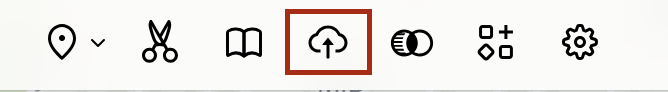
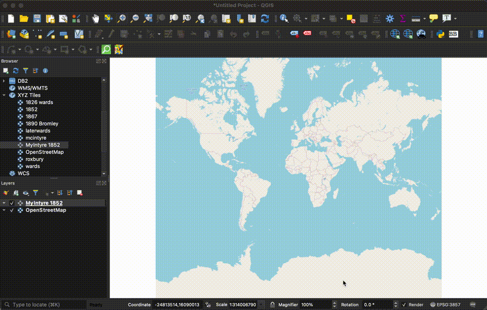
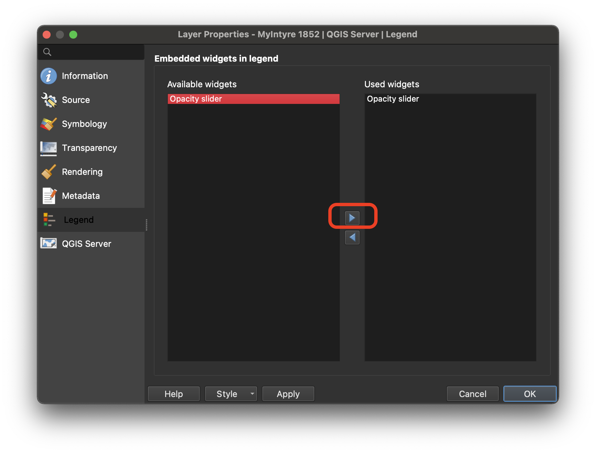

Georeference Harvard Library Digital Collections Using Allmaps
Topics covered by this guide
- Select a map to georeference from the Harvard Libraries’ digital collections
- Georeference with free browser tool, AllMaps
- Add the georeferenced map to a GIS project in QGIS
Select a map to georeference from the Harvard Libraries’ digital collections
- If you visit the Harvard Library catalog, HOLLIS , you can:
- Change the initial search drop-down from
Catalog & ArticlestoLibrary Catalogto show only items held by the library, and exclude journal articles. - Scroll down to the
Locationfilter on the right, and filter byHarvard Map Collection
You’ll notice that some of the maps from the Harvard Map Collection have been scanned and added to the catalog record, so that you can view the map in high-resolution online from a link in the catalog that says ONLINE ACCESS.
-
Select
ONLINE ACCESS. -
In the top-right corner of the Harvard Library image viewer, select the metadata Tooltip by clicking the
iicon.
-
Scroll to the bottom of the popup window and under
Links → Manifest, copy the manifest URL.
Example IIIF Manifest
- https://iiif.lib.harvard.edu/manifests/ids:12216977
- If the map you are interested has not been scanned, you are working with a multi-page book, or otherwise need help finding the manifest URL, contact us at maps@harvard.edu.

- Navigate to the AllMaps.org Editor
- Paste the map’s IIIF manifest URL into the input box and select
Load.
Learn how to georeference with free browser tool, AllMaps
Use the georeference tab to assign control points between the map on the left, and the baselayer on the right. Start with at least three control points, evenly distributed at equidistant spots around the map. You can add a few more, for more specificity. Click the results tab to check the results.

View the results
- Select the
Resultstab. - Select
View current image. - Use the two buttons at the bottom of the screen to adjust the opacity.
Get a link to use the map layer in other GIS software
- Return back to the
Resultspage.
Use the back button in your browser, if necessary, to return to the
Resultspage.

- Highlight the
XYZ tile URLand copy it to your clipboard. This is a link you can use to bring the georeferenced map in as a layer to many GIS tools such as ArcGIS Pro or Online, including StoryMaps, QGIS, or Felt.
Add the layer to a Felt map
-
From a Felt map, select the
Upload anythingbutton.  -
Choose
From URL. -
Paste in the
XYZ tile URLfrom AllMaps. -
Select
Add to map.
Allow a moment or two for the map to render.
- In the
Legend, click where it says{Y}. A window should open on the right-hand side of the map. In the window, you can change the title of the map in the legend by clicking{Y}and editing the name. There should also be a slider to adjust the map{Opacity}.
Add the layer to a QGIS project
Once you have finished georeferencing your map in AllMaps, click the Results tab. AllMaps is now hosting your georeferenced map as a GIS web layer you can use in any project. All you will need is the layer link. You can find it on the Results page:
-
Open QGIS. If you need to download the free desktop software, learn how to do so here .
-
Open a new project.
-
In the
Browserwindow, underXYZ TilesdragOpenStreetMapinto the map canvas window.
-
In the
Browserwindow, right-clickXYZ Tilesand selectNew Connection.
-
Name your map, and paste in tile URL you copied from the AllMaps
Resultspanel. SelectOK.
-
In the
Browserwindow, underXYZ Tiles, double-click the new connection item you just created to add it to the map. -
Zoom in to your area of interest using the zoom controls in the banner menu across the top of the program. As you zoom in, your georeferenced map should appear.
Tip: it may take a second for the quality of the tiles to resolve. 
-
To adjust opacity of your map, right-click the map layer in the
Layer listand selectProperties. -
Under the
Legendtab in thePropertiesmenu, highlightOpacity Sliderand use the right-pointing arrow to move the widget fromAvailable widgetstoUsed Widgets.  -
Select
OK. There should now be an opacity control under the map layer item in theLayer list.